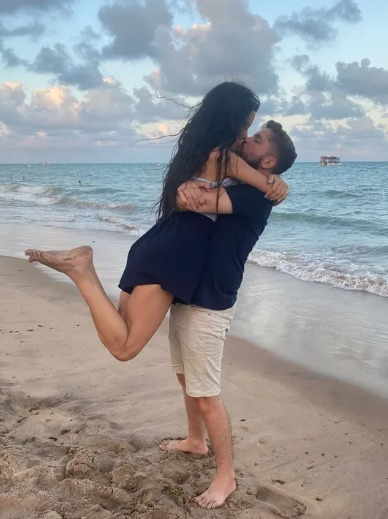
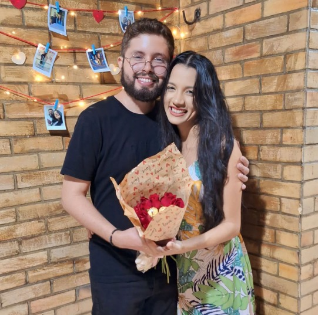
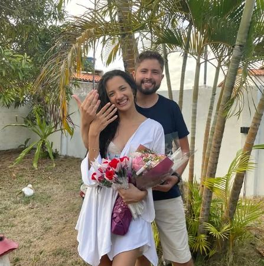
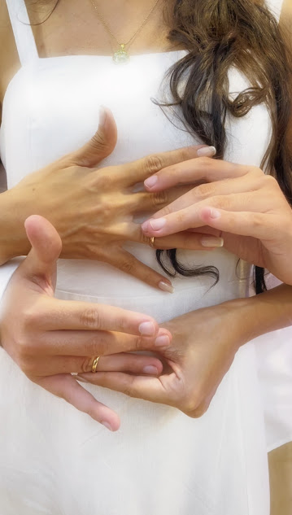

Onde te conheci

Era 2019, aniversário de um amigo em uma pizzaria. Eu não estava com vontade de ir. Quase desisti, mas fui por consideração.
Nossa mesa estava razoavelmente cheia, todo mundo conversando, e eu estava pensando apenas em comemorar a vida de Israel e se eu iria conseguir comer pelo menos umas 15 fatias de pizza. Até que eu te vi. Não foi nenhuma cena de filme. O mundo não parou, o som ambiente continuou lá, mas o que eu senti foi algo que nenhuma palavra é capaz de descrever.
Na hora eu pensei que você era a mulher mais linda que eu já tinha visto. Não foi só por aparência, mas a forma com que você sorria e ajeitava o seu cabelo era diferente. Cada microexpressão depois de uma fala ou um gesto parecia uma escultura sendo lapidada de maneira perfeita por escultor em prantos orgulhoso pelo seu próprio trabalho. Só que naquele dia a gente praticamente não conversou. Consegui achar seu Instagram, mas acabou ficando por isso mesmo.
O tempo passou. A gente seguiu a vida. Mas vez ou outra eu me lembrava de você. Quando a gente começou a conversar anos depois, parecia que não era algo começando do zero. Era como se já tivesse começado lá atrás, naquele dia que eu quase nem fui, e aquele sentimento inicial tivesse voltado a tona de maneira instantânea.
Hoje eu penso que se eu tivesse ficado em casa, talvez muita coisa seria diferente. Ou quem sabe nossa vida deveria estar interligada de uma maneira ou de outra.
Como te pedi em namoro

Eu já sabia que queria você. Não foi algo que eu decidi do nada. Não é atoa que eu sempre afirmei que você seria minha esposa antes mesmo de termos começado a namorar. O amor é uma escolha, e eu escolhi amar você antes mesmo de conhecer seus defeitos e pontos fracos. Cada conversa inicial me afirmaram que eu estava conhecendo a mulher que sempre descrevi em pensamentos.
Dia 05 de julho foi o nosso dia! Chamei as pessoas importantes no nosso relacionamento, organizamos toda a decoração, minha mãe ficou responsável pelos salgados, comprei flores. Acredito que aconteceu tudo como deveria acontecer. Simples, romântico e com o nosso estilo.
Eu falei pra você que ia te levar pra tirar foto em lugar extremamente bonito. Mas quando começamos a passar nas ruas embruacadas do Conde com seus olhos vendados, achei que você iria pular do carro e chamar a policia.
Quando tirei a venda, você estava na casa de Lyz, um pouco confusa e sem entender nada. Mas depois que eu comecei a cantar e tocar pra você do meu jeito, parece que tudo começou a fazer mais sentido até pra mim. As pétalas de rosa no chão com nossas iniciais, os corações em fitas pendurados, o varal com nossas fotos, as velas no chão, o buquê, as alianças e um único pedido: Você quer namorar comigo?
Quando o primeiro "SIM" chegou. Senti que estava onde deveria estar. E que aquele seria apenas o primeiros passos da linda história que estávamos para construir. E até hoje eu sei que foi uma das decisões mais certas que eu já tomei.
Como te pedi em noivado

Foi no primeiro dia de 2025. Passamos a virada de ano na igreja e, durante a madrugada, fomos para Lucena, para a casa onde meus pais costumam passar a virada. Durante o dia, os outros amigos foram chegando. E o que me surpreende até hoje é que, em nenhum momento, você desconfiou de várias pessoas se desdobrando para ir de João Pessoa a Lucena só para “comemorar o ano novo”.
O dia amanheceu, descansamos, conversamos, brincamos e, durante a tarde, fomos para a praia, enquanto o pessoal organizava todo o pedido. Quando retornamos, você não entendeu nada, mas pra mim todos os sonhos e expectativas estavam se tornando mais reais a cada passo. Enquanto entrávamos, cada um foi lhe entregando uma flor, até que, no final, veio o buquê junto com o pedido.
Ver seus olhos brilhando enquanto você dizia o tão esperado “sim” foi um dos momentos mais importantes, se não o mais importante da minha singela vida. Você pode ter reclamado de não estar arrumada para o momento, mas, quando eu olhei para você, apenas conseguia enxergar todo o nosso futuro diante dos meus olhos. Vi que aquele momento era a confirmação do que Deus já havia plantado em meu coração antes mesmo de começarmos a namorar. Você é e sempre será a mulher da minha vida, e eu te amarei para sempre.
Minhas expectativas para o nosso casamento

Eu não espero um casamento perfeito. Eu espero um casamento verdadeiro.
Espero que a gente continue sendo amigo antes de qualquer coisa. Que a gente converse sobre tudo, até sobre o que for difícil. Que a gente aprenda a resolver as coisas juntos, sem competir, sem guardar mágoa, sem deixar o orgulho ser maior que o amor.
Eu espero construir uma casa onde tenha paz. Onde a gente se sinta seguro. Onde rir seja comum, onde nossos filhos possam enxergar em nós referências positivas sobre o amor.
Espero dias bons, mas também espero saber atravessar os dias difíceis ao seu lado. Porque casamento, pra mim, não é só sobre momentos felizes. É sobre permanecer. É sobre escolher ficar, mesmo quando for mais fácil desistir.
Eu quero crescer com você. Crescer como homem, como marido, como pessoa. Quero aprender a te amar melhor com o tempo. Quero ser alguém em quem você possa confiar sempre.
E a coisa que eu mais quero é que, daqui a muitos anos, a gente olhe pra trás e tenha orgulho da história que decidimos construir juntos apesar todas as dificuldades.
Eu não quero só casar com você. Eu quero te amar e viver a vida inteira ao seu lado até o meu último suspiro.